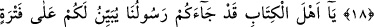

EHL-İ KİTÂBI
KUR’ÂN’A DÂVET
15- Ey ehl-i kitap! Rasûlümüz size Kitap’tan gizlemekte olduğunuz birçok şeyi
açıklamak üzere geldi; birçok (kusurunuzu) da affediyor. Gerçekten size Allah’tan
bir nur ve apaçık bir kitap geldi.
16- Rızâsını arayanı Allah onunla kurtuluş yollarına götürür ve onları kendi
izniyle karanlıklardan aydınlığa çıkarır, dosdoğru bir yola iletir.
17- «Şüphesiz Allah, Meryem oğlu Mesîh’tir.» diyenler andolsun ki kâfir
olmuşlardır. De ki: “Öyleyse Allah, Meryem oğlu Mesîh’i, annesini ve
yeryüzündekilerin hepsini helâk etmek istese Allah’a karşı kimin elinde bir şey
var? Göklerde, yerde ve ikisi arasında ne varsa hepsinin mülkiyeti Allah’a aittir. O,
dilediğini yaratır ve Allah her şeye tam mânâsıyle kadirdir.
18- Yahûdîler ve hristiyanlar «Biz Allah’ın oğulları ve sevgilileriyiz» dediler. De
ki: Öyleyse günahlarınızdan dolayı size neden azap ediyor? Doğrusu siz de O’nun
yarattığı insanlardansınız. O, dilediğini bağışlar ve dilediğine azap eder. Göklerde,
yerde ve ikisinin arasında ne varsa mülkiyeti Allah’a aittir. Sonunda dönüş de